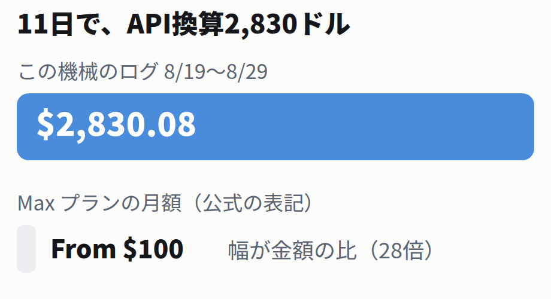

まず結果から。1コマンドでこの表が出ます
この記事を書いている機械で、いま測った数字です。日付ごとの使用量を、ドル換算つきで出しました。
ccusage の日別集計（JSONを表に整形。整形前の生の表は第3章）
$ npx ccusage daily --json | python3 daily_table.py # 全文は _labs/ 日付 換算コスト トークン計 2026-08-19 $ 163.01 68,935,195 2026-08-20 $ 116.92 125,281,479 2026-08-21 $ 283.02 314,481,457 2026-08-22 $ 60.42 84,881,330 2026-08-23 $ 153.20 173,130,651 2026-08-24 $ 423.95 456,283,857 2026-08-25 $ 330.67 322,300,732 2026-08-26 $ 342.71 309,662,062 2026-08-27 $ 365.95 444,948,034 2026-08-28 $ 578.34 419,351,858 2026-08-29 $ 11.89 10,751,355 合計 11日 $2830.08
11日で $2,830.08。この機械はAIに毎日長時間の作業をさせているので極端な例ですが、だからこそ確かめる意味がありました。Max プランの月額は公式ページの表記で「From $100」です。もしAPIの従量課金で同じことをしていたら、11日で月額の28倍を払っていた計算になります。
表の読み方を2つ。まず日によって10倍近い波があります（最小 $60.42、最大 $578.34）。使い方が同じでも、長い作業を回した日は跳ねます。次に、8/29 の行が小さいのはその日の途中で撮ったからです。当日の行は1日の終わりまで確定しません。

表には出しませんでしたが、生の出力ではモデル別の内訳行も付きます。この機械のログには複数の系統のモデルが混ざって記録されていて、換算はモデルごとの単価で行われています。ここから、この数字の出どころと、この$を何と読むべきかを順に確かめます。